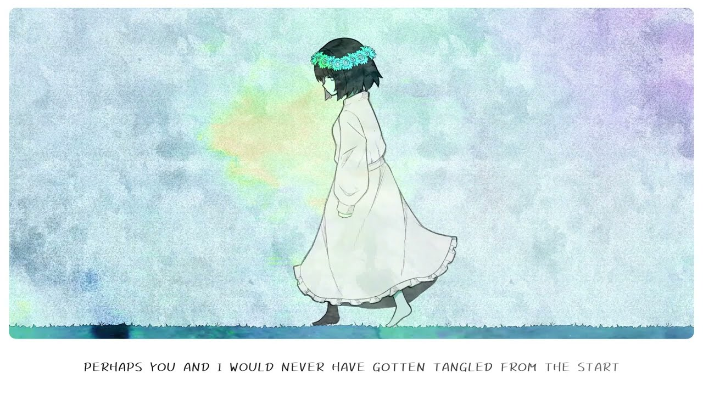

Eine Kleine

Song by Will Stetson ‧ 2023
Watch on YouTube
You know I always will be grateful I had met
And I had lived with you
And yet, as time goes on and older we grow, it feels a little sad too
The happiness we know, for all the joy, it gives me woe
I'll take it along so pitifully 'til it's time for me to go
And if I'm only but a stand in for a love and life already gone
Then I'd rather have been born as a pebble watching as the days fall
You'd never need to know me or to see what's in my heart
Perhaps you and I would never have gotten tangled from the start
All I've ever wanted is to tell you how I think
And let you know what's on my mind
Even so, I go and lie
Telling you that each of the thoughts I have are all mine
If you knew the real me that's shaking as they cry
You'd never reach a hand for me to find
So why? Oh, why? Oh, why?
Even though the pain never ends
I'm torn into shreds, you smile there beside me
All I ever wanted to do was to show you one too
And say that I was happy
And the world, it falls to its knees
And melts in the breeze, all blurring ever slowly
These miracles flooding me won't ever make it leave
Because through the hurting, you kept calling out to me
And if you're only bound to lose your way
And be all alone without a light
Then maybe someone else could carry the weight
And walk through the cold night
Pretending it's okay, we make it through another day
We keep laughing on, oblivious to the ever worse pain
Though I pray, as I pray every day
I am haunted all throughout the horrid night
Knowing that someday, all the woes and agony
Will take you to where I'll never find
If you knew the real me that's shaking as they cry
You'd never turn to face with such forgiving eyes
So why? Oh, why? Oh, why?
Even in the darkest of nights, the worst of the lies
I couldn't even seem to move
I can feel the warmth of your hand, as you smiled back
And told me we would pull through
To return the life to your eyes, the color of sky
No matter what it comes to
For someone so precious, oh, what ever could I do?
Hey, is it alright if I keep calling out to you?
From the first breath in me within the endless misery
I had cried, trembling, "just someone end me quickly"
So I tread carefully while searching ever dearly
For the one to set me free
You are all I'll ever need
Even though the pain never ends, I'm torn into shreds
You smile there beside me
All I ever wanted to do was to show you one too
And say that I was happy
And the world, it falls to its knees
And melts in the breeze, all blurring ever slowly
These miracles flooding me won't ever make it leave
Because through the hurting, you kept calling out to me
In turn, do you think that I could call you happily?